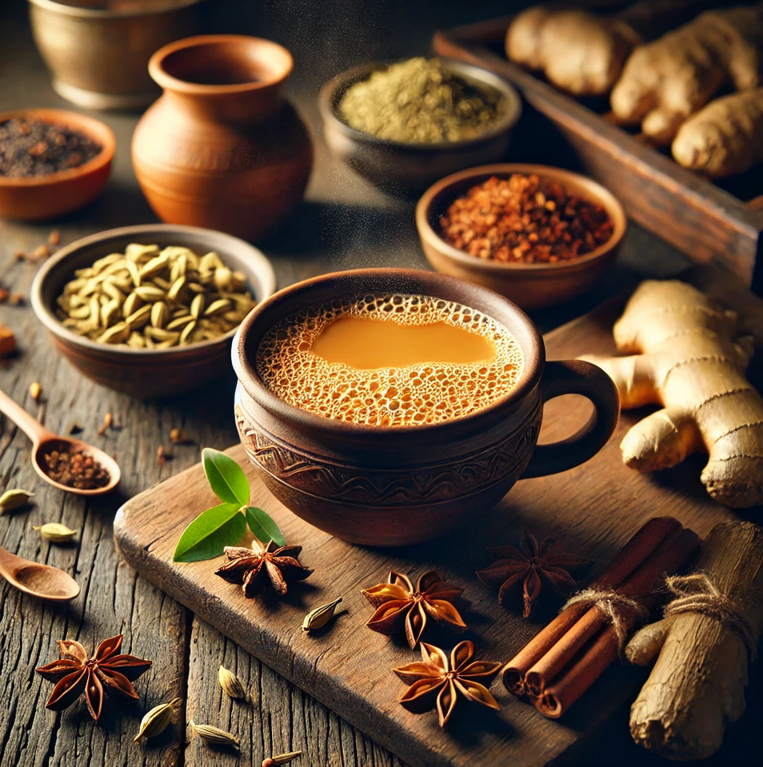

Home
How to make Masala Chai

This recipie is generated by AI. Make it at your own risk
Description
Masala Chai is a fragrant and spiced Indian tea, perfect for a refreshing boost. Made with black tea, aromatic spices, and milk, it’s a comforting drink enjoyed across India.
Ingredients
- 2 cups water
- 1 cup milk
- 2 tsp tea leaves
- 2-3 crushed cardamom pods
- 1-inch ginger (grated)
- 2 tsp sugar (adjust to taste)
Steps
- Boil water with ginger and cardamom.
- Add tea leaves and simmer for 2 minutes.
- Pour in milk and sugar, then bring to a boil.
- Strain into cups and serve hot.